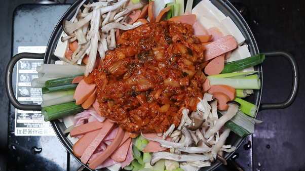

부대찌개
재료
2~3인분 기준
(계량 : 밥숟가락)
대파 : 2대
두부 : 1모
스팸 : 2/3덩이 (총 1개 필요)
베이컨 : 5줄
소시지 : 4줄
느타리버섯 : 한 줌
팽이버섯 : 한 줌
라면사리 : 1개
슬라이스 치즈 : 1장
청양고추 : 1개
시판 사골육수 : 500ml
물 : 400ml
(양념장 재료)
스팸 : 1/3덩이
간 돼지고기 : 150g
다진마늘 : 2숟가락
된장 : 1숟가락
고추장 : 1숟가락
고춧가루 : 2숟가락
국간장 : 2숟가락
맛술 : 1숟가락
순후추 : 조금
소고기 다시다 : 1/2숟가락
양파 : 1/2개
